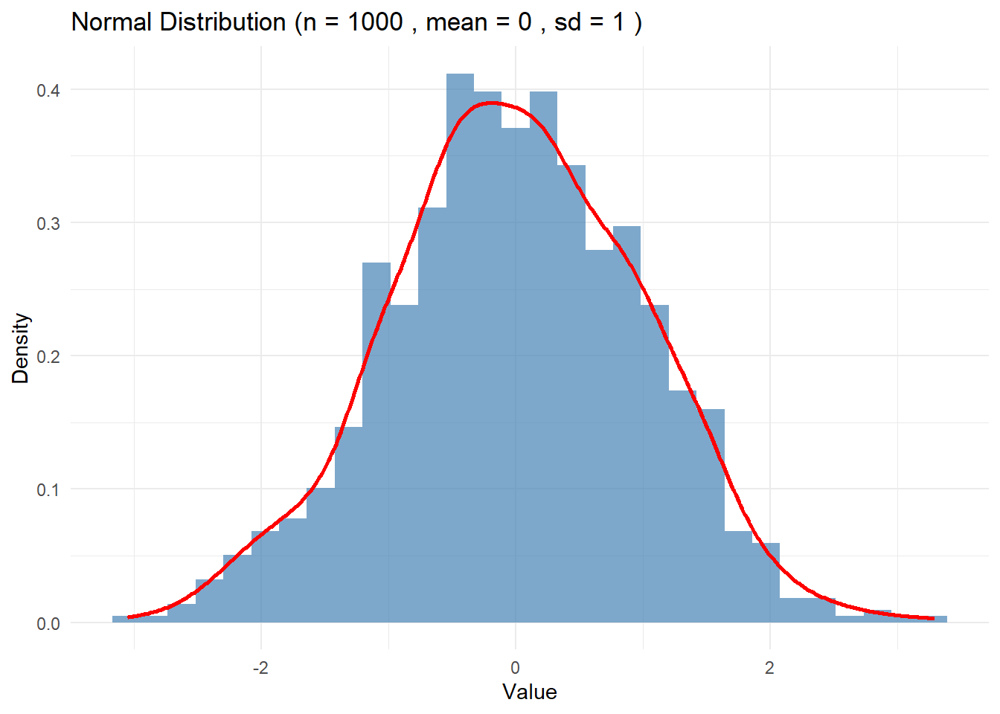
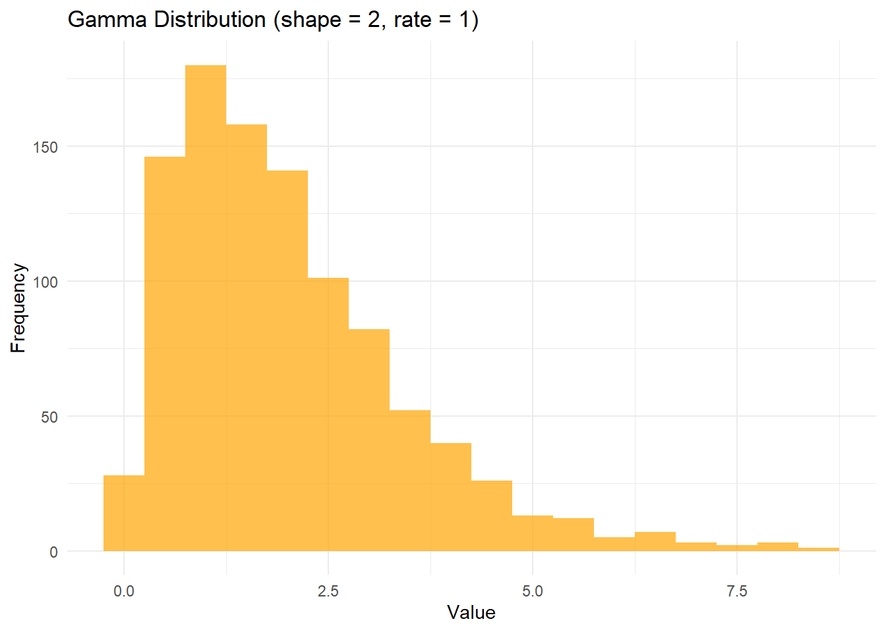
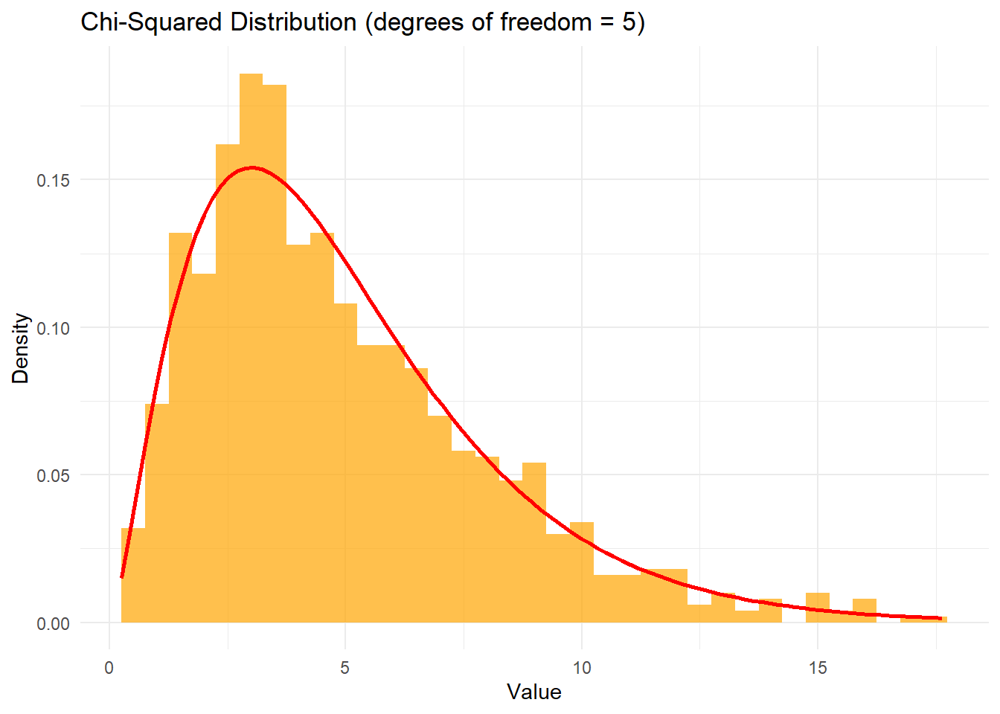
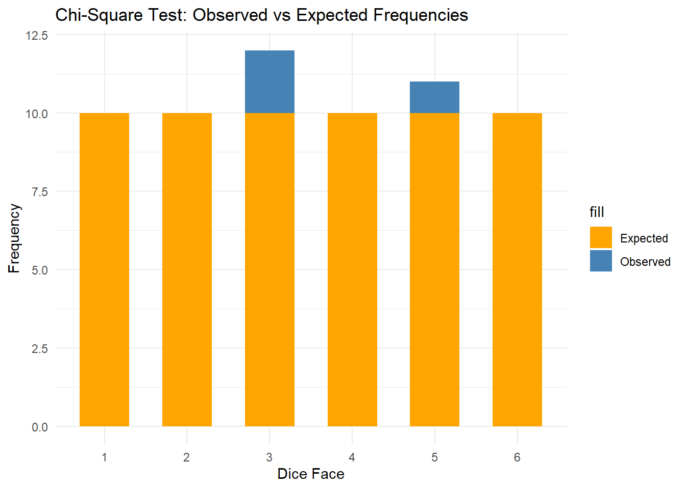

Probability is the branch of mathematics that deals with uncertainty. It quantifies the likelihood of an event occurring, and it is the foundation of many fields, including statistics, machine learning, finance, and more. Understanding probability allows us to make informed decisions in the presence of uncertainty. In this chapter, we will cover the basic concepts of probability, including the key rules and types of probability distributions. We will also learn how to simulate probabilistic events and visualize them in R.
1. Basic Probability Concepts
Definition of Probability
Event(사건) and Sample Space(표본 공간)
Event: 특정 실험에서 발생할 수 있는 결과(예를 들어, 동전을 던졌을 때 앞면이 나오는 사건)
Sample Space (S): 실험에서 가능한 모든 결과들의 집합(예를 들어, 동전을 던졌을 때 표본 공간은 S={앞면,뒷면})
Probability(확률)
어떤 사건 A 가 일어날 확률 P(A)는 그 사건이 일어나는 경우의 수를 표본 공간의 가능한 경우의 수로 나눈 값
P(A): Probability of event A occurring
|A|: Number of cases belonging to case A
|S|: Total number of cases in sample space S
\[
P(A)=\frac{|A|}{|S|}
\]
Basic properties of probability
A value between 0 and 1: For any event A, the probability of that event occurring is greater than or equal to 0 and less than or equal to 1.
\[
0 \leq P(A) \leq 1
\]
The probability of the entire sample space is 1: the sum of the probabilities of all events in the sample space is 1.
\[
P(S) = 1
\]
Example: Rolling a Die
When rolling a fair six-sided die, the probability of getting a 4 is:
\[
P(D=4) = \frac{1}{6}
\]
R Code Example
We can simulate rolling a die and estimate the probability of getting a 4 using R:
# Simulate rolling a fair six-sided die 10,000 timesset.seed(123)rolls <-sample(1:6, size =10000, replace =TRUE)# Estimate the probability of rolling a 4prob_4 <-mean(rolls ==4)cat("Estimated Probability of Rolling a 4:", prob_4)
Estimated Probability of Rolling a 4: 0.159
2. Probability Rules
Rule 1: Complement Rule
The complement of an event A, denoted as Ac, is the event that A does not occur. The probability of the complement is:
\[
P(A^c) = 1 - P(A)
\]
Rule 2: Addition Rule
For two events ( A ) and ( B ), the addition rule is:
\[
P(A \cup B) = P(A) + P(B) - P(A \cap B)
\]
If ( A ) and ( B ) are mutually exclusive, the formula simplifies to:
\[
P(A \cup B) = P(A) + P(B)
\]
Rule 3: Multiplication Rule
For two independent events ( A ) and ( B ), the multiplication rule is:
\[
P(A \cap B) = P(A) \times P(B)
\]
For dependent events:
\[
P(A \cap B) = P(A) \times P(B \mid A)
\]
3. Conditional Probability
Conditional probability is the probability of an event occurring given that another event has already occurred. It is denoted by \(P(A \mid B)\), which reads “the probability of A given B”.
\[
P(A \mid B) = \frac{P(A \cap B)}{P(B)}
\]
Example: Conditional Probability in Card Drawing
Consider a deck of 52 cards. Let A be the event that the card is a king, and B be the event that the card is red. The probability of drawing a red king given that a red card was drawn is:
A discrete probability distribution deals with outcomes that can be counted (finite or countably infinite). Common discrete distributions include:
Bernoulli Distribution: Describes a single trial with two outcomes (success or failure).
Binomial Distribution: Describes the number of successes in a fixed number of independent Bernoulli trials.
Poisson Distribution: Describes the number of events occurring within a fixed interval.
Bernoulli Distribution
The Bernoulli distribution is a distribution where one trial has one of two outcomes (success or failure).
\[
P(X = k) = p^k (1 - p)^{n - k}
\]
Binomial Distribution
The probability of observing ( k ) successes in ( n ) trials with success probability ( p ) is given by the binomial distribution:
\[
P(X = k) = \binom{n}{k} p^k (1 - p)^{n - k}
\]
Example: Binomial Distribution in R
The binomial distribution is used to model the probability of observing ‘k’ successes in ‘n’ trials where the probability of success in each trial is ‘p’.
# Probability of getting exactly 3 heads in 5 coin flips with p = 0.5dbinom(x =3, size =5, prob =0.5)
[1] 0.3125
# Simulate 1000 trials of 5 coin flips eachset.seed(123)binom_trials <-rbinom(1000, size =5, prob =0.5)hist(binom_trials, breaks =5, main ="Histogram of Binomial Distribution", xlab ="Number of Heads")
dbinom():
이항 분포에서 특정 값의 확률 질량 함수(Probability Mass Function, PMF)를 계산
형식: dbinom(x, size, prob)
x: 성공 횟수 (정수)
size: 시도 횟수 (정수)
prob: 성공 확률 (0과 1 사이)
rbinom():
이항 분포를 따르는 랜덤 표본을 생성
형식: rbinom(n, size, prob)
n: 생성할 표본의 개수
size: 시도 횟수 (정수)
prob: 성공 확률 (0과 1 사이)
5. Continuous Probability Distributions
A continuous probability distribution deals with outcomes that can take any value within a given range (infinite). Common continuous distributions include:
Normal Distribution: The bell-shaped distribution that describes many natural phenomena.
Exponential Distribution: Describes the time between events in a Poisson process.
Uniform Distribution: Every outcome in a given range is equally likely.
Normal Distribution
The probability density function (PDF) of a normal distribution with mean ( \(\mu\) ) and standard deviation ( \(\sigma\) ) is given by:
The normal distribution is widely used in probability and statistics. It is symmetric and centered around the mean, with spread determined by the standard deviation.
# Plot a normal distribution with mean = 0 and sd = 1x <-seq(-4, 4, length.out =1000)y <-dnorm(x, mean =0, sd =1)plot(x, y, type ="l", main ="Normal Distribution", xlab ="x", ylab ="Density")
6. Law of Large Numbers
The Law of Large Numbers states that as the number of trials ( n ) increases, the empirical probability approaches the true probability ( P ).
\[
\lim_{n \to \infty} \hat{P} = P
\]
We will simulate flipping a fair coin 10,000 times and track how the empirical probability of heads converges to 0.5.
대수의 법칙은 반복된 실험의 횟수가 증가할수록, 실험의 경험적 확률(실제로 관측된 확률)이 이론적 확률에 점점 가까워진다는 것을 설명하는 중요한 개념
set.seed(123)flips <-rbinom(10000, size =1, prob =0.5)empirical_prob <-cumsum(flips) / (1:10000)# Plot the convergence of empirical probability to 0.5plot(empirical_prob, type ="l", col ="blue", ylim =c(0, 1),main ="Law of Large Numbers",xlab ="Number of Flips", ylab ="Empirical Probability")abline(h =0.5, col ="red", lty =2)
rbinom(10000, size = 1, prob = 0.5): 성공 확률이 0.5인 베르누이 시행을 10,000번 시뮬레이션. 각 시행은 동전을 한 번 던졌을 때 앞면(성공, 1) 또는 뒷면(실패, 0)이 나오는 결과.
cumsum(flips) / (1:10000): 누적된 성공 횟수를 시행 횟수로 나누어 각 시점에서의 경험적 확률을 계산.
cumsum(flips)는 매 시점까지의 성공 횟수의 누적 합을 계산하며, 이를 각 시행의 횟수로 나누면 그 시점까지의 성공 확률을 얻을 수 있음.
7. Random Variable
A random variable is a key concept in probability theory. It is a function that maps the outcomes of a random experiment to numerical values, allowing for mathematical treatment of random phenomena. Random variables can be classified into two types: Discrete Random Variables and Continuous Random Variables.
1. Definition of a Random Variable
A random variable is a function that assigns a numerical value to each outcome of a particular experiment. In other words, it translates events into numbers so that we can analyze probabilistic problems mathematically.
Random Variable ( X ): A variable that represents the outcome of an event in numerical form.
Sample Space ( S ): The set of all possible outcomes of a random experiment.
The random variable ( X ) maps the events in the sample space to numbers. For example, when rolling a die, the sample space is ( S = { 1, 2, 3, 4, 5, 6 } ), and the random variable ( X ) represents the numbers on the die.
2. Discrete Random Variable
A discrete random variable takes on a countable number of distinct values. It can have either a finite or infinite number of possible values and is often used to represent counts or outcomes.
Example: Consider the experiment of tossing a coin twice. We can define the number of heads as the random variable ( X ).
Sample Space ( S = {{HH}, {HT}, {TH}, {TT}} )
The random variable ( X ) represents the number of heads.
In this case, ( X ) can take the values 0, 1, or 2.
Probability Distribution of a Discrete Random Variable
A discrete random variable has a probability distribution that assigns probabilities to each of its possible values. The probability distribution of a discrete random variable ( X ) is given by:
\[
P(X = x_i) = p_i
\]
\(X\): Discrete random variable
\(x_i\): A specific value that \(X\) can take
\(P(X = x_i) = p_i\): The probability that \(X\) takes the value \(x_i\).
Example of Binomial Distribution
A common example of a discrete random variable is the Binomial Distribution. The binomial distribution represents the probability of having a certain number of successes in a series of independent trials where each trial has two possible outcomes (e.g., success/failure).
The probability mass function (PMF) of a binomial random variable is given by:
\[
P(X = k) = \binom{n}{k} p^k (1 - p)^{n - k}
\]
\(n\): Number of trials
\(k\): Number of successes
\(p\): Probability of success
\((1 - p)\): Probability of failure
Example: Tossing a Coin 3 Times
Let’s consider tossing a fair coin 3 times. The number of heads, ( X ), is a binomial random variable. ( X ) can take the values 0, 1, 2, or 3, and we can calculate the probability for each outcome.
The probability distribution of the binomial random variable ( X ) is:
X (Number of Heads)
P(X = x) (Probability)
0
0.125
1
0.375
2
0.375
3
0.125
3. Continuous Random Variable
A continuous random variable can take any value within a given range or interval. Continuous random variables are used to model outcomes that can take an infinite number of real values.
Example: Consider the height of people as a random variable. Since height can take an infinite number of real values, it is a continuous random variable. Continuous random variables are generally associated with probability over intervals rather than specific points.
Probability Density Function (PDF) of a Continuous Random Variable
Continuous random variables are described by a Probability Density Function (PDF). The probability that a continuous random variable ( X ) lies within an interval ([a, b]) is found by integrating the PDF over that interval:
\[
P(a \leq X \leq b) = \int_a^b f(x) \, dx
\]
\(f(x)\): The probability density function
Since the probability of a continuous random variable taking any exact value is 0, we calculate probabilities over intervals.
Example: Normal Distribution
The Normal Distribution is a common continuous distribution. It is defined by its mean ( \(\mu\) ) and standard deviation ( \(\sigma\) ), and its probability density function is:
In a normal distribution, probabilities for specific intervals are computed by integrating the PDF over those intervals.
Example: Let’s assume that the height of people follows a normal distribution with a mean of 170 cm and a standard deviation of 10 cm. We can calculate the probability that a person’s height is between 160 cm and 180 cm by integrating the normal distribution’s PDF over that range.
4. Expected Value
The expected value of a random variable is the weighted average of all possible values it can take, with the probabilities as weights. The expected value ( E(X) ) of a random variable ( X ) is defined as:
For a discrete random variable:
\[
E(X) = \sum_i x_i P(X = x_i)
\]
\(x_i\) are the possible values of \(X\) and \(P(X = x_i)\) is the probability of each value.
For a continuous random variable:
\[
E(X) = \int_{-\infty}^{\infty} x f(x) \, dx
\]
Where \(f(x)\) is the probability density function.
Example: Expected Value of a Die Roll
When rolling a fair die, the possible outcomes are 1 through 6. Since each outcome is equally likely, the expected value of the die roll is:
Variance measures how much the values of a random variable differ from the expected value. The variance of a random variable \(X\) is denoted as \(\text{Var}(X)\) and is defined as:
\[
\text{Var}(X) = E\left[(X - E(X))^2\right]
\]
The square root of the variance is called the standard deviation, and it brings the unit of measurement back to the same scale as the original data.
Random variables are fundamental tools in probability theory for quantifying and analyzing random events. They can be discrete or continuous, depending on the nature of the outcomes. The expected value and variance of a random variable provide key insights into the behavior of the distribution. Random variables, together with their probability distributions, are used to model real-world phenomena mathematically.
8. More Distributions & Probability Density Functions
1. Binomial Distribution (이항분포)
The binomial distribution is a distribution that calculates the probability of the number of successes \(k\) when an experiment with a constant probability of success \(p\) is repeated \(n\) times. 일정한 성공 확률 \(p\)를 가진 실험을 \(n\)번 반복했을 때, 성공 횟수 \(k\)의 확률을 구하는 분포.
\[
P(X = k) = \binom{n}{k} p^k (1 - p)^{n - k}
\]
\(n\): Number of trials
\(k\): Number of successes
\(p\): Probability of success
\(1 - p\): Probability of failure
The binomial distribution is used in events such as coin flipping and gambling, and is used when each trial is independent and the probability of success is constant. For example, the probability of getting heads when flipping a coin 10 times.
Example: In coin flipping, the probability of success is p = 0.5, and it describes the distribution of the number of successes (the number of heads) when flipping 10 times.
# 이항분포 예시: 동전 던지기set.seed(123) # 재현성을 위해 시드 설정n_trials <-10p_success <-0.5n_simulations <-1000# 시뮬레이션: n_trials 번의 동전 던지기simulated_successes <-rbinom(n_simulations, size = n_trials, prob = p_success)# 결과 시각화library(ggplot2)df_binomial <-data.frame(Successes = simulated_successes)# Plot histogram of the simulation results and overlay the binomial probability mass function (PMF)ggplot(df_binomial, aes(x = Successes)) +geom_histogram(aes(y = ..density..), fill ="steelblue", alpha =0.7, binwidth =1, boundary =-0.5) +labs(title ="Binomial Distribution: Coin Flip Simulation",x ="Number of Heads in 10 Flips",y ="Density") +theme_minimal()
Warning: The dot-dot notation (`..density..`) was deprecated in ggplot2 3.4.0.
ℹ Please use `after_stat(density)` instead.
이항분포 시뮬레이션
동전의 앞면이 나올 확률을 0.5로 설정한 후, 여러 번 던졌을 때의 결과를 시뮬레이션
# 동전 던지기 시뮬레이션coin_flip_simulation <-function(n, p) {rbinom(n, size =1, prob = p)}# 동전 던지기 결과를 시각화하는 함수plot_coin_flip <-function(n, p) { flips <-coin_flip_simulation(n, p) df <-data.frame(Result = flips)ggplot(df, aes(x =factor(Result))) +geom_bar(fill ="steelblue") +labs(title =paste("Coin Flip Simulation (n =", n, ", p =", p, ")"),x ="Result (0 = Tails, 1 = Heads)", y ="Count") +theme_minimal()}# 동전 던지기 결과 100번 시각화# n과 p를 바꿔가며 시뮬레이션 해보기.plot_coin_flip(1000, 0.5)
2. Uniform Distribution (균등분포)
A uniform distribution is a distribution in which all events occur with the same probability. It is divided into discrete and continuous uniform distributions, and in the case of a discrete uniform distribution, it is defined by the following probability mass function.
균등분포는 모든 사건이 동일한 확률로 발생하는 분포. 이산형과 연속형 균등분포로 나뉘며, 이산형 균등분포의 경우는 다음과 같은 확률 질량 함수로 정의됨.
\[
P(X = x) = \frac{1}{n}
\]
\(n\): Number of possible outcomes
It is used in experiments such as dice rolling, and is applied when the probability of each dice side appearing is the same.
Example: A dice has numbers from 1 to 6, and each number has an equal chance of \(\frac{1}{6}\).
균등분포 시뮬레이션
주사위의 각 면이 나올 확률이 동일한 경우의 시뮬레이션 구현
# 주사위 던지기 시뮬레이션dice_roll_simulation <-function(n) {sample(1:6, size = n, replace =TRUE)}# 주사위 던지기 결과를 시각화하는 함수plot_dice_roll <-function(n) { rolls <-dice_roll_simulation(n) df <-data.frame(Result = rolls)ggplot(df, aes(x =factor(Result))) +geom_bar(fill ="steelblue") +labs(title =paste("Dice Roll Simulation (n =", n, ")"),x ="Dice Face", y ="Count") +theme_minimal()}# 주사위 던지기 결과 100번 시각화# n 을 늘려보면서 시도.plot_dice_roll(100)
3. Poisson Distribution (포아송분포)
The Poisson distribution is used to model the number of times a specific event occurs within a unit of time or space. The probability mass function of the Poisson distribution is as follows.
\(\lambda\): Event rate per unit time (average number of occurrences)
\(k\): Number of events occuring
The Poisson distribution is used when events occur independently in time or space and have a constant occurrence rate. It is mainly applied to the number of calls to a telephone switching system, the number of emergency patients in a hospital, and the number of visitors to a website.
Example: In a system where an average of 4 customers arrive per hour, you can calculate the probability that 3 customers will arrive per hour.
Simulation
# 1. Poisson Distribution Simulation and Visualizationlambda <-5# Rate of events (mean number of events)poisson_data <-rpois(1000, lambda = lambda)# Create a data frame for Poisson distributiondf_poisson <-data.frame(Value = poisson_data)# Plot Poisson distributionggplot(df_poisson, aes(x = Value)) +geom_histogram(binwidth =1, fill ="steelblue", alpha =0.7) +labs(title ="Poisson Distribution (lambda = 5)", x ="Number of Events", y ="Frequency") +theme_minimal()
1시간 동안 평균 4명의 고객이 도착하는 시스템에서, 1시간 동안 3명의 고객이 도착할 확률을 계산
# 포아송분포 예시: 고객 도착lambda <-4# 평균 고객 도착 수 (1시간당)k <-3# 관심 있는 고객 도착 수# 확률 계산prob_k_customers <-dpois(k, lambda)# 출력prob_k_customers
[1] 0.1953668
4. Normal Distribution (정규분포)
The normal distribution is the most widely used continuous probability distribution, and is defined by mean \(\mu\) and standard deviation \(\sigma\). Its probability density function is as follows:
Normal distribution appears in many natural phenomena and is symmetrical around the median. If the data is clustered around the mean, the normal distribution can be used to model the data.
Example: People’s heights and test scores are generally normally distributed. For example, we can assume that people’s heights are normally distributed with a mean of 170 cm and a standard deviation of 10 cm.
정규분포 시뮬레이션
# 정규분포 시뮬레이션normal_distribution_simulation <-function(n, mean, sd) {rnorm(n, mean = mean, sd = sd)}# 정규분포 시각화 함수plot_normal_distribution <-function(n, mean, sd) { data <-normal_distribution_simulation(n, mean, sd) df <-data.frame(Value = data)ggplot(df, aes(x = Value)) +geom_histogram(aes(y = ..density..), bins =30, fill ="steelblue", alpha =0.7) +geom_density(color ="red", size =1) +labs(title =paste("Normal Distribution (n =", n, ", mean =", mean, ", sd =", sd, ")"),x ="Value", y ="Density") +theme_minimal()}# 정규분포 시각화# n, mean, sd 를 변경하면서 시뮬레이션.plot_normal_distribution(1000, 0, 1)
Warning: Using `size` aesthetic for lines was deprecated in ggplot2 3.4.0.
ℹ Please use `linewidth` instead.

5. Exponential Distribution (지수분포)
The exponential distribution is used to model the time intervals over which events occur (사건이 발생하는 시간 간격 모델링), and its probability density function is:
\(\lambda\): Incident rate (사건 발생률): 단위 시간 안에서 사건의 발생 횟수
The exponential distribution is used to model the time intervals between occurrences of certain events (e.g., system failures, customer arrivals). This distribution is used when events occur independently and the average time interval is constant.
특정 사건(예: 시스템 고장, 고객 도착)이 발생하기까지의 시간 간격을 모델링하는 데 사용됨. 이 분포는 사건이 독립적으로 발생하고, 평균 시간 간격이 일정할 때 사용됨.
Example: If the mean time between failures for a system is 2 hours, we can assume that the time until the next failure follows an exponential distribution.
Simulation
# 3. Exponential Distribution Simulation and Visualizationrate_exp <-1# Rate parameter (1/mean)exp_data <-rexp(1000, rate = rate_exp)# Create a data frame for Exponential distributiondf_exp <-data.frame(Value = exp_data)# Plot Exponential distributionggplot(df_exp, aes(x = Value)) +geom_histogram(binwidth =0.2, fill ="darkgreen", alpha =0.7) +labs(title ="Exponential Distribution (rate = 1)", x ="Value", y ="Frequency") +theme_minimal()
한 시스템의 평균 고장 간격이 2시간일 때, 다음 고장이 발생할 때까지의 시간이 지수분포를 따른다고 가정하면 아래와 같은 분포.
# 지수분포 예시: 시스템 고장 간격set.seed(321) # 재현성을 위해 시드 설정lambda <-1/2# 평균 고장 간격이 2시간이므로 rate는 1/2n_simulations <-10000# 시뮬레이션: 고장 간격 시간failure_times <-rexp(n_simulations, rate = lambda)# 결과 시각화df_exponential <-data.frame(FailureTime = failure_times)ggplot(df_exponential, aes(x = FailureTime)) +geom_histogram(aes(y = ..density..), bins =50, fill ="steelblue", alpha =0.7) +geom_density(color ="red", size =1) +labs(title ="Exponential Distribution: System Failure Times",x ="Time until Next Failure (hours)",y ="Density") +theme_minimal()
6. Gamma Distribution (감마분포)
The gamma distribution models waiting times (the time interval between occurrences of multiple exponentially distributed events), (대기 시간, 즉 여러 개의 지수분포 사건이 발생하는 시간 간격을 모델링) and has a probability density function of:
The gamma distribution is a generalization of the exponential distribution, modeling the waiting time until \(\alpha\) independent events occur. It is applied to time to failure in physical systems, and price movements in financial data.
감마분포는 지수분포의 일반화된 형태로, \(\alpha\)번의 독립적인 사건이 발생할 때까지의 대기 시간을 모델링. 물리적 시스템에서 고장까지의 시간, 금융 데이터에서 주식의 가격 변동 등에 적용됨.
감마 분포의 shape (alpha)가1일 때, 감마 분포는 지수 분포가 됨.
Simulation
# Gamma Distribution Simulation and Visualizationshape_gamma <-2rate_gamma <-1gamma_data <-rgamma(1000, shape = shape_gamma, rate = rate_gamma)# Create a data frame for Gamma distributiondf_gamma <-data.frame(Value = gamma_data)# Plot Gamma distributionggplot(df_gamma, aes(x = Value)) +geom_histogram(binwidth =0.5, fill ="orange", alpha =0.7) +labs(title ="Gamma Distribution (shape = 2, rate = 1)", x ="Value", y ="Frequency") +theme_minimal()

감마 분포에서 shape와 rate는 각각 형태와 비율을 결정하는 중요한 매개변수. 이 두 매개변수는 감마 분포의 모양과 위치를 결정하는 역할.
1. shape 매개변수 (shape_gamma = 2)
감마 분포에서 shape는 형태를 결정하는 매개변수로, shape가 클수록 분포는 오른쪽으로 더 늘어나며, 꼬리가 길어짐. 반대로 shape가 작을수록 분포는 더 왼쪽으로 몰리며, 첨도가 높아짐.
2. rate 매개변수 (rate_gamma = 1)
rate는 분포의 비율을 나타내며, 분포의 위치와 퍼짐 정도에 영향을 미침. rate는 종종 scale의 역수. rate가 커지면 분포는 왼쪽으로 이동하고, 작아지면 분포가 더 오른쪽으로 늘어남
Example: The gamma distribution can be used to model the time until five major components in a system independently fail.
예시: 한 시스템에서 5개의 주요 부품이 독립적으로 고장날 때까지의 시간을 모델링할 때 감마분포를 사용할 수 있음.
# 감마분포 예시: 시스템 부품 고장 시간set.seed(654) # 재현성을 위해 시드 설정alpha <-5# 형상 모수beta <-1# 척도 모수 (rate)n_simulations <-10000# 시뮬레이션: 부품 고장까지의 시간failure_times <-rgamma(n_simulations, shape = alpha, rate = beta)# 결과 시각화df_gamma <-data.frame(FailureTime = failure_times)ggplot(df_gamma, aes(x = FailureTime)) +geom_histogram(aes(y = ..density..),bins =50, fill ="steelblue", alpha =0.7) +geom_density(color ="red", size =1) +labs(title ="Gamma Distribution: System Component Failure Times",x ="Time until 5 Failures",y ="Density") +theme_minimal()
alpha = 5:시스템 부품이 고장나기까지 5번의 고장 이벤트를 기다리는 시간에 해당
beta = 1: 사건(고장)이 일정한 비율로 발생하며, 1단위 시간당 평균 1번의 고장이 발생하는 것을 의미
예를 들어, 어떤 시스템의 주요 부품 5개가 독립적으로 고장날 때까지의 시간을 모델링한다고 가정. 각 부품이 고장날 때까지의 평균 시간이 2시간이라면, 감마분포를 통해 5개의 부품이 고장날 때까지 걸리는 시간을 모델링.
α: 5개의 주요 부품이 모두 고장날 때까지의 이벤트 수.
β: 각 부품이 고장날 때까지 걸리는 시간의 역수.
예를 들어, 평균 2시간이므로 β=1/2.
감마분포를 사용한 부품 고장 시간 시뮬레이션
# 감마분포 예시: 시스템 부품 고장 시간set.seed(123) # 재현성을 위해 시드 설정# 감마분포 파라미터 설정alpha <-5# 형상 모수: 5개의 부품이 고장날 때까지의 이벤트 수beta <-1/2# 척도 모수: 평균 고장 시간의 역수 (평균 2시간)# 감마분포에서 10,000번의 시뮬레이션 수행 (각각의 시뮬레이션은 5개 부품의 고장 시간)n_simulations <-10000failure_times <-rgamma(n_simulations, shape = alpha, rate = beta)# 결과 시각화library(ggplot2)df_gamma <-data.frame(FailureTime = failure_times)ggplot(df_gamma, aes(x = FailureTime)) +geom_histogram(aes(y = ..density..), bins =50, fill ="steelblue", alpha =0.7) +geom_density(color ="red", size =1) +labs(title ="Gamma Distribution: System Component Failure Times",x ="Time until 5 Components Fail (hours)",y ="Density") +theme_minimal()
# 고장 시간의 중앙값과 95% 신뢰구간 계산median_failure_time <-median(failure_times)credible_interval_failure <-quantile(failure_times, c(0.025, 0.975))# 결과 출력cat("부품 5개 고장 시간의 중앙값:", median_failure_time, "\n")
부품 5개 고장 시간의 중앙값: 9.276901
cat("부품 5개 고장 시간 95% 신뢰구간:", credible_interval_failure, "\n")
부품 5개 고장 시간 95% 신뢰구간: 3.266251 20.13797
7. Beta Distribution (베타분포)
The beta distribution is a continuous probability distribution between 0 and 1, defined by two parameters, \(\alpha\) and \(\beta\). The probability density function of the beta distribution is as follows. 베타분포는 0과 1 사이의 연속 확률 분포로, 두 모수 \(\alpha\)와 \(\beta\)에 의해 정의됨. 베타분포의 확률 밀도 함수는 다음과 같습니다.
The beta distribution is mainly used when there is prior knowledge about the probability of success. It is often used to model the uncertainty of probability in A/B testing.
베이지안 통계에서, 베타 분포는 이항 확률 변수의 사전 분포로 자주 사용되는데, 베타 함수는 사전 분포와 사후 분포를 계산할 때 중요한 역할을 함. 예를 들어, 성공/실패 실험에서 성공 확률의 사전 신념을 베타 분포로 모델링한 후, 실험 결과를 통해 사후 확률을 업데이트하는 과정에서 베타 함수가 사용된다.
Example: When estimating the probability of success for two options in an A/B test, the beta distribution can be used to model uncertainty.
Simulation
# Beta Distribution Simulation and Visualizationshape1 <-2shape2 <-5beta_data <-rbeta(1000, shape1 = shape1, shape2 = shape2)# Create a data frame for Beta distributiondf_beta <-data.frame(Value = beta_data)# Plot Beta distributionggplot(df_beta, aes(x = Value)) +geom_histogram(binwidth =0.05, fill ="purple", alpha =0.7) +labs(title ="Beta Distribution (shape1 = 2, shape2 = 5)", x ="Value", y ="Frequency") +theme_minimal()
A/B 테스트에서 두 가지 옵션에 대해 성공 확률을 추정할 때 베타분포를 사용하여 불확실성을 모델링
# 베타분포 예시: A/B 테스트 성공 확률library(ggplot2)alpha_prior <-2beta_prior <-5# 베타분포 샘플링n_simulations <-10000beta_samples <-rbeta(n_simulations, shape1 = alpha_prior, shape2 = beta_prior)# 결과 시각화df_beta <-data.frame(Probability = beta_samples)ggplot(df_beta, aes(x = Probability)) +geom_histogram(aes(y = ..density..), bins =50, fill ="steelblue", alpha =0.7) +geom_density(color ="red", size =1) +labs(title ="Beta Distribution: A/B Test Success Probability",x ="Probability of Success",y ="Density") +theme_minimal()
A 또는 B의 성공 확률이 불확실할 때, 그 확률을 베타 분포로 모델링한 것
베타 분포에서 10,000번 샘플링한 값들을 바탕으로, A 또는 B가 성공할 확률 분포를 시각적으로 보여주며, 성공 확률이 주로 어떤 값에 집중되는지 확인할 수 있음.
성공 확률에 대한 불확실성이 있지만, 이 분포를 보면 대체로 성공 확률이 약 20%~40% 사이에 있을 가능성이 높다는 것을 알 수 있음.
alpha_prior = 2와 beta_prior = 5는 A 또는 B 옵션의 성공 횟수와 실패 횟수에 대한 사전 지식을 나타냄
alpha_prior = 2: A 또는 B 옵션에서 성공한 횟수가 2번이라는 것을 의미하고,
beta_prior = 5: A 또는 B 옵션에서 실패한 횟수가 5번이라는 것을 의미함.
베타 분포는 성공과 실패의 횟수에 따라 변하는 확률을 나타내며, alpha_prior = 2와 beta_prior = 5는 성공 확률이 주로 작을 확률(2번 성공하고 5번 실패했으니까)이 높을 것이라는 신념을 반영.
8. t-Distribution (t-분포)
The t-distribution, also known as Student’s t-distribution, is a continuous probability distribution that arises when estimating the mean of a normally distributed population with an unknown standard deviation, particularly when the sample size is small. It is similar to the normal distribution but has heavier tails, which means it is more prone to producing values far from its mean. The t-distribution’s probability density function is given as follows.
t-분포는 모집단의 표준편차가 알려지지 않았을 때, 특히 표본 크기가 작을 때 사용되는 연속 확률 분포. 표본 크기가 작은 경우나 모집단의 표준편차를 모를 때 모집단 평균에 대한 추론을 할 때 사용. 정규분포와 비슷한 형태를 가지지만, 표본 크기가 작을 때 보다 넓은 꼬리를 가지는 것이 특징인데, 이는 작은 표본에서의 불확실성을 반영한 것.
As the degrees of freedom increase, the t-distribution approaches the standard normal distribution. The t-distribution is commonly used in hypothesis testing, particularly in t-tests where the sample size is small, and the population standard deviation is unknown.
자유도는 일반적으로 표본 크기에서 1을 뺀 값으로 정의됨 (n-1)
Example: The t-distribution is used in the one-sample t-test, two-sample t-test, and paired t-test to determine whether there is a significant difference between sample means and population means or between two sample means.
Simulation
# t-Distribution Simulation and Visualizationdf <-10# degrees of freedomt_data <-rt(1000, df = df)# Create a data frame for t-distributiondf_t <-data.frame(Value = t_data)# Plot t-distributionggplot(df_t, aes(x = Value)) +geom_histogram(aes(y = ..density..), binwidth =0.3, fill ="steelblue", alpha =0.7) +stat_function(fun = dt, args =list(df = df), color ="red", size =1) +labs(title ="t-Distribution (degrees of freedom = 10)", x ="Value", y ="Density") +theme_minimal()
# t-분포와 정규분포 비교library(ggplot2)# 자유도 설정df <-c(1, 5, 30) # 자유도 1, 5, 30에 대한 t-분포# 데이터프레임 생성x <-seq(-4, 4, length.out =100)df_list <-lapply(df, function(d) dt(x, df = d))names(df_list) <-paste("df =", df)df_data <-data.frame(x =rep(x, times =3), density =unlist(df_list), group =factor(rep(df, each =100)))# 그래프 그리기ggplot(df_data, aes(x, density, color = group)) +geom_line(size =1) +labs(title ="t-분포와 정규분포 비교", x ="값", y ="밀도") +geom_line(aes(x, dnorm(x)), color ="black", linetype ="dashed") +# 정규분포 추가theme_minimal()
자유도가 커질수록, t-분포는 점점 정규분포에 가까워지며, 그 차이는 주로 꼬리 부분에서 드러난다.
Shiny t-검정 예시
# Install necessary packageslibrary(shiny)library(ggplot2)# UIui <-fluidPage(titlePanel("t-검정 시뮬레이션"),sidebarLayout(sidebarPanel(sliderInput("n", "표본 크기 (n)", min =5, max =100, value =20),numericInput("mean", "표본 평균", value =75),numericInput("sd", "표본 표준편차", value =10),numericInput("mu0", "모평균 가설값 (mu0)", value =70),actionButton("run", "t-검정 수행") ),mainPanel(plotOutput("distPlot"),verbatimTextOutput("testResult") ) ))# Serverserver <-function(input, output) {observeEvent(input$run, { output$distPlot <-renderPlot({# Generate random sample dataset.seed(123) sample_data <-rnorm(input$n, input$mean, input$sd)# Create a ggplot object with the histogram of sample dataggplot(data =data.frame(x = sample_data), aes(x)) +geom_histogram(aes(y = ..density..), bins =15, fill ="lightblue", color ="black") +stat_function(fun = dnorm, args =list(mean = input$mean, sd = input$sd), color ="red", size =1.2) +geom_vline(xintercept = input$mu0, linetype ="dashed", color ="blue", size =1.2) +labs(title ="표본 데이터 분포와 t-분포", x ="표본 값", y ="밀도") +theme_minimal() +annotate("text", x = input$mu0, y =0.05, label =paste("가설 모평균 =", input$mu0), color ="blue", angle =90, vjust =-0.5) }) output$testResult <-renderPrint({# Perform t-test t_result <-t.test(rnorm(input$n, input$mean, input$sd), mu = input$mu0) t_result }) })}# Run the Shiny appshinyApp(ui = ui, server = server)
Shiny applications not supported in static R Markdown documents
이 검정은 단일 표본 t-검정 (One Sample t-test)으로, 주어진 데이터가 모평균 μ=70 과 다른지를 검정
t-값: 3.2765
표본 평균이 70에서 얼마나 벗어났는지, 표준 오차를 기준으로 몇 배 떨어져 있는지를 나타냄
자유도 (df): 24
표본 크기 n = 25 에서 1을 뺀 값
p-값: 0.00319
귀무가설(모평균이 70이다)이 참일 때, 주어진 표본에서 관측된 t-값(또는 그보다 극단적인 값)이 나올 확률.
p-값이 0.05보다 작으므로, 귀무가설을 기각. 즉, 이 데이터는 모평균이 70이라는 가설에 대해 유의미하게 다르다는 것을 의미.
대립 가설: 모평균은 70과 같지 않다 (two-tailed test)
alternative hypothesis는 “모평균이 70이 아니다”라는 가설. 이는 양측 검정 (two-tailed test).
이 검정에서 계산된 95% 신뢰구간은 72.23에서 79.81 사이입니다. 이는 모평균이 이 구간 내에 있을 것으로 95% 신뢰한다는 의미. 중요한 점은 70이 이 구간에 포함되지 않으므로, 모평균이 70과 다르다는 결론을 내릴 수 있음.
표본 평균: 76.02137
Two-tail 검정이란?
Two-tailed 검정(양측 검정)은 통계적 가설 검정에서 대립가설이 모수가 가설 값과 다르다는 것을 검증하는 방식. 즉, 모수가 가설 값보다 크거나 작다는 두 가지 가능성을 모두 고려하는 검정.
Two-tailed 검정의 특징
대립가설 (H1): “모수가 가설 값과 다르다”를 의미하며, 이는 두 가지 방향(작거나 크거나)을 모두 고려.
귀무가설 (H0): “모수가 가설 값과 같다”는 가설로, 일반적으로 검정하고자 하는 기본 가설.
Two-tailed 검정의 예
예를 들어, 한 제품의 평균 무게가 500g인지를 검정한다고 가정할 때, two-tailed 검정에서는 제품의 평균 무게가 500g보다 클 수도 있고, 작을 수도 있다는 두 가지 가능성을 모두 고려합니다.
귀무가설 (H0): 제품의 평균 무게는 500g이다. 즉, μ=500.
대립가설 (H1): 제품의 평균 무게는 500g과 다르다. 즉, μ≠500.
Two-tailed 검정의 핵심
검정 방향: 두 방향 모두에서 귀무가설이 기각될 수 있다. 즉, 모수가 가설 값보다 작거나 크면 귀무가설이 기각.
임계값: 임계값(critical value)은 양쪽 꼬리 부분에서 계산. 예를 들어, 유의수준 α=0.05에서 two-tailed 검정을 수행할 때, 각 꼬리에 2.5%씩(전체 5%)의 유의수준이 할당됨.
p-값: 검정에서 관찰된 t-값 또는 z-값의 절대값을 기준으로 p-값을 계산하며, 양쪽 꼬리의 확률을 더한 값이 p-값이 됨.
그래프적 해석
Two-tailed 검정에서는 양쪽 꼬리에 임계값을 할당.
예를 들어, 유의수준 α=0.05인 two-tailed 검정에서는 각 꼬리에 0.025씩 배분하여, t-값이 임계값을 넘어서는 경우 귀무가설을 기각.
Two-tailed 검정 vs One-tailed 검정
Two-tailed 검정: 모수가 가설 값과 다를 가능성을 양쪽(크거나 작거나)에서 모두 검정
One-tailed 검정: 모수가 가설 값보다 크거나 작은 한 방향만을 검정.
우측 검정: \(\mu > \mu_0\)
좌측 검정: \(\mu < \mu_0\)
9. Chi-Squared Distribution (카이제곱 분포)
The chi-squared distribution is a continuous probability distribution that arises in statistics, particularly in hypothesis testing and confidence interval estimation for variance. It is the distribution of the sum of the squares of independent standard normal random variables. The probability density function of the chi-squared distribution is given by the following formula.
카이제곱 분포는 통계에서 주로 가설 검정과 분산에 대한 신뢰 구간 추정에 사용되는 연속 확률 분포. 카이제곱 분포는 독립적인 표준 정규 확률 변수들의 제곱합의 분포로 정의됨.
The chi-squared distribution is mainly used in chi-squared tests, such as the chi-squared goodness-of-fit test and chi-squared test of independence, where it helps assess the significance of observed frequencies.
Example: The chi-squared distribution is used in hypothesis testing to evaluate how well an observed distribution fits the expected distribution.
Simulation
# Chi-Squared Distribution Simulation and Visualizationdf <-5# degrees of freedomchi_squared_data <-rchisq(1000, df = df)# Create a data frame for chi-squared distributiondf_chi_squared <-data.frame(Value = chi_squared_data)# Plot chi-squared distributionggplot(df_chi_squared, aes(x = Value)) +geom_histogram(aes(y = ..density..), binwidth =0.5, fill ="orange", alpha =0.7) +stat_function(fun = dchisq, args =list(df = df), color ="red", size =1) +labs(title ="Chi-Squared Distribution (degrees of freedom = 5)", x ="Value", y ="Density") +theme_minimal()

카이제곱 검정은 주로 카테고리형 데이터의 분포가 기대되는 분포와 얼마나 다른지를 평가하는 데 사용. 두 가지 주요 유형의 카이제곱 검정은 적합도 검정(Goodness-of-Fit Test)과 독립성 검정(Test of Independence).
적합도 검정 예시: 주사위의 공정성 검정
주사위를 60번 굴렸을 때, 각각의 면(1~6)이 나오는 횟수가 주사위가 공정한 경우와 차이가 있는지 검정해보자. 공정한 주사위는 각 면이 동일한 확률(1/6)로 나와야 함.
1. 관측된 데이터(실험 데이터):
주사위를 60번 던져서 각각의 면이 나온 횟수:
1: 8번
2: 10번
3: 12번
4: 9번
5: 11번
6: 10번
2. 기대되는 데이터:
공정한 주사위라면 각 면은 60번 중 1/6 확률로 나와야 하므로:
각 면의 기대 횟수 = 60/6 = 10
R 코드: 카이제곱 적합도 검정
# 관측된 데이터 (실제 주사위를 굴려 나온 결과)observed <-c(8, 10, 12, 9, 11, 10)# 기대값 (공정한 주사위에서 각 면이 나오는 횟수)expected <-rep(10, 6) # 각 면이 10번 나와야 함# 카이제곱 검정 수행chisq_test <-chisq.test(observed, p = expected /sum(expected))print(chisq_test)
Chi-squared test for given probabilities
data: observed
X-squared = 1, df = 5, p-value = 0.9626
# 시각화ggplot(df, aes(x = Face)) +geom_bar(aes(y = Observed, fill ="Observed"), stat ="identity", position ="dodge", width =0.6) +geom_bar(aes(y = Expected, fill ="Expected"), stat ="identity", position ="dodge", width =0.6) +labs(title ="Chi-Square Test: Observed vs Expected Frequencies",x ="Dice Face", y ="Frequency") +scale_fill_manual(values =c("Observed"="steelblue", "Expected"="orange")) +theme_minimal()

카이제곱 값(X-squared): 검정 통계량은 X-squared. 이 값은 관측된 값과 기대된 값의 차이.
p-value: 0.9 이상으로 매우 큼. p-value가 0.05보다 크기 때문에 귀무가설을 기각할 수 없고, 즉, 주사위가 공정하다는 가설을 지지할 수 있음.
로지스틱 회귀 모델 적합도 평가
고객이 상품을 구매할 확률을 예측하는 로지스틱 회귀 모델을 만들고, 모델의 예측이 실제 구매 여부와 얼마나 일치하는지 평가한다고 가정해 보자.
# 데이터 준비observed <-c(50, 30) # 실제 구매 여부 (구매, 비구매)expected <-c(45, 35) # 모델이 예측한 구매 확률에 따른 기대값# 카이제곱 검정 수행chisq_test <-chisq.test(observed, p = expected /sum(expected))print(chisq_test)
Chi-squared test for given probabilities
data: observed
X-squared = 1.2698, df = 1, p-value = 0.2598
# 시각화df <-data.frame(Outcome =factor(c("Purchased", "Not Purchased")),Observed = observed,Expected = expected)library(ggplot2)ggplot(df, aes(x = Outcome)) +geom_bar(aes(y = Observed, fill ="Observed"), stat ="identity", position ="dodge", width =0.6) +geom_bar(aes(y = Expected, fill ="Expected"), stat ="identity", position ="dodge", width =0.6) +labs(title ="Model Fit: Observed vs Expected",x ="Outcome", y ="Frequency") +scale_fill_manual(values =c("Observed"="steelblue", "Expected"="orange")) +theme_minimal()
10. F-Distribution (F-분포)
The F-distribution is a continuous probability distribution that arises in the testing of whether two variances are equal. It is the ratio of two independent chi-squared distributions, each divided by their respective degrees of freedom. The F-distribution is often used in analysis of variance (ANOVA) and regression analysis. The probability density function of the F-distribution is given by the following formula.
F-분포는 두 분산이 동일한지를 검정할 때 나타나는 연속 확률 분포. 이는 각각 자유도로 나눈 두 독립적인 카이제곱 분포의 비율로 정의됨. F-분포는 주로 분산 분석(ANOVA)와 회귀 분석에서 사용.
\[
f(x; d_1, d_2) = \frac{\sqrt{\left(\frac{d_1 x}{d_1 x + d_2}\right)^{d_1} \left(\frac{d_2}{d_1 x + d_2}\right)^{d_2}}}{x \, B\left(\frac{d_1}{2}, \frac{d_2}{2}\right)}
\]
\(d_1\): degrees of freedom for the numerator (분자 자유도)
\(d_2\): degrees of freedom for the denominator (분모 자유도)
The F-distribution is commonly used in ANOVA to compare the variances of multiple groups and in regression analysis to test the overall significance of the model.
Example: The F-distribution is used in ANOVA to test the null hypothesis that the means of several populations are equal.
Simulation
# F-Distribution Simulation and Visualizationd1 <-5# Degrees of freedom for the numeratord2 <-10# Degrees of freedom for the denominatorf_data <-rf(1000, df1 = d1, df2 = d2)# Create a data frame for F-distributiondf_f <-data.frame(Value = f_data)# Plot F-distributionggplot(df_f, aes(x = Value)) +geom_histogram(aes(y = ..density..), binwidth =0.2, fill ="darkgreen", alpha =0.7) +labs(title ="F-Distribution (d1 = 5, d2 = 10)", x ="Value", y ="Density") +theme_minimal()
F-분포는 두 모집단의 분산비를 비교할 때 자주 사용되며, 특히 분산 분석(ANOVA)나 회귀 분석에서 모델의 적합도를 평가할 때 중요한 역할을 함. F-분포는 두 개의 카이제곱 분포의 비율로 정의되며, 두 집단 간의 분산 차이가 통계적으로 유의미한지 판단하는 데 사용됨.
F-분포의 응용: 분산 분석(ANOVA)
F-분포는 ANOVA의 검정 통계량으로 활용. F-분포를 통해 각 그룹 간의 분산 차이가 통계적으로 유의미한지 평가할 수 있음.
예시: 세 가지 교육 방법에 따른 학생 성적 비교
학생들이 세 가지 다른 교육 방법(A, B, C)을 받았을 때, 각 교육 방법에 따라 학생들의 성적에 차이가 있는지 분산 분석(ANOVA)을 통해 확인해 보자.
데이터:
세 가지 교육 방법을 적용한 학생들의 성적 데이터가 다음과 같을 때,
A 그룹: 85, 90, 88, 92, 87
B 그룹: 78, 85, 82, 86, 80
C 그룹: 90, 91, 94, 89, 92
# 데이터 준비group_A <-c(85, 90, 88, 92, 87)group_B <-c(78, 85, 82, 86, 80)group_C <-c(90, 91, 94, 89, 92)# 데이터 프레임으로 변환df <-data.frame(Score =c(group_A, group_B, group_C),Group =factor(rep(c("A", "B", "C"), each =5)))# ANOVA 수행anova_model <-aov(Score ~ Group, data = df)summary(anova_model)
Df Sum Sq Mean Sq F value Pr(>F)
Group 2 212.1 106.1 14.33 0.00066 ***
Residuals 12 88.8 7.4
---
Signif. codes: 0 '***' 0.001 '**' 0.01 '*' 0.05 '.' 0.1 ' ' 1
# 시각화: 그룹별 점수 분포library(ggplot2)ggplot(df, aes(x = Group, y = Score, fill = Group)) +geom_boxplot(alpha =0.7) +labs(title ="ANOVA: Scores by Education Method",x ="Education Method", y ="Score") +theme_minimal()
aov(Score ~ Group, data = df) 함수는 ANOVA(분산 분석)를 수행하여 그룹 간 성적 차이가 통계적으로 유의한지를 평가.
summary(anova_model)은 ANOVA 결과를 출력. 여기서 F-통계량과 p-value를 확인.
F-분포는 다음 두 가지 분산을 비교하는 데 사용
집단 간 분산(처리 분산): 각 그룹의 평균이 전체 평균에서 얼마나 떨어져 있는지.
집단 내 분산(오차 분산): 각 그룹 내부에서 데이터가 얼마나 퍼져 있는지.
F-값(F value) 6.5: 그룹 간의 변동이 그룹 내의 변동에 비해 얼마나 큰지를 나타냄.
p-value: 0.0172로, 통계적으로 유의미한 차이가 있다는 것을 보여줌.
Shiny app for simulating distributions
# 필요한 패키지 불러오기library(shiny)library(ggplot2)# Distribution Simulation Functionsbinomial_simulation <-function(n, size, prob) {rbinom(n, size = size, prob = prob)}uniform_simulation <-function(n, min, max) {runif(n, min = min, max = max)}poisson_simulation <-function(n, lambda) {rpois(n, lambda = lambda)}normal_simulation <-function(n, mean, sd) {rnorm(n, mean = mean, sd = sd)}exponential_simulation <-function(n, rate) {rexp(n, rate = rate)}gamma_simulation <-function(n, shape, rate) {rgamma(n, shape = shape, rate = rate)}beta_simulation <-function(n, shape1, shape2) {rbeta(n, shape1 = shape1, shape2 = shape2)}t_simulation <-function(n, df) {rt(n, df = df)}chi_squared_simulation <-function(n, df) {rchisq(n, df = df)}f_simulation <-function(n, df1, df2) {rf(n, df1 = df1, df2 = df2)}# Plot Function for Distributionsplot_simulation <-function(dist_type, n, ...) { args <-list(...)if (dist_type =="Binomial Distribution") { data <-binomial_simulation(n, args$size, args$prob) df <-data.frame(Value = data)ggplot(df, aes(x =factor(Value))) +geom_bar(fill ="steelblue") +labs(title =paste("Binomial Distribution (n =", n, ", size =", args$size, ", prob =", args$prob, ")"),x ="Number of Successes", y ="Count") +theme_minimal() } elseif (dist_type =="Uniform Distribution") { data <-uniform_simulation(n, args$min, args$max) df <-data.frame(Value = data)ggplot(df, aes(x = Value)) +geom_histogram(bins =30, fill ="steelblue", alpha =0.7) +labs(title =paste("Uniform Distribution (n =", n, ", min =", args$min, ", max =", args$max, ")"),x ="Value", y ="Count") +theme_minimal() } elseif (dist_type =="Poisson Distribution") { data <-poisson_simulation(n, args$lambda) df <-data.frame(Value = data)ggplot(df, aes(x = Value)) +geom_histogram(bins =30, fill ="steelblue", alpha =0.7) +labs(title =paste("Poisson Distribution (n =", n, ", lambda =", args$lambda, ")"),x ="Number of Events", y ="Count") +theme_minimal() } elseif (dist_type =="Normal Distribution") { data <-normal_simulation(n, args$mean, args$sd) df <-data.frame(Value = data)ggplot(df, aes(x = Value)) +geom_histogram(aes(y = ..density..), bins =30, fill ="steelblue", alpha =0.7) +geom_density(color ="red", size =1) +labs(title =paste("Normal Distribution (n =", n, ", mean =", args$mean, ", sd =", args$sd, ")"),x ="Value", y ="Density") +theme_minimal() } elseif (dist_type =="Exponential Distribution") { data <-exponential_simulation(n, args$rate) df <-data.frame(Value = data)ggplot(df, aes(x = Value)) +geom_histogram(aes(y = ..density..), bins =30, fill ="steelblue", alpha =0.7) +geom_density(color ="red", size =1) +labs(title =paste("Exponential Distribution (n =", n, ", rate =", args$rate, ")"),x ="Value", y ="Density") +theme_minimal() } elseif (dist_type =="Gamma Distribution") { data <-gamma_simulation(n, args$shape, args$rate) df <-data.frame(Value = data)ggplot(df, aes(x = Value)) +geom_histogram(aes(y = ..density..), bins =30, fill ="steelblue", alpha =0.7) +geom_density(color ="red", size =1) +labs(title =paste("Gamma Distribution (n =", n, ", shape =", args$shape, ", rate =", args$rate, ")"),x ="Value", y ="Density") +theme_minimal() } elseif (dist_type =="Beta Distribution") { data <-beta_simulation(n, args$shape1, args$shape2) df <-data.frame(Value = data)ggplot(df, aes(x = Value)) +geom_histogram(aes(y = ..density..), bins =30, fill ="steelblue", alpha =0.7) +geom_density(color ="red", size =1) +labs(title =paste("Beta Distribution (n =", n, ", shape1 =", args$shape1, ", shape2 =", args$shape2, ")"),x ="Value", y ="Density") +theme_minimal() } elseif (dist_type =="t-Distribution") { data <-t_simulation(n, args$df) df <-data.frame(Value = data)ggplot(df, aes(x = Value)) +geom_histogram(aes(y = ..density..), bins =30, fill ="steelblue", alpha =0.7) +geom_density(color ="red", size =1) +labs(title =paste("t-Distribution (n =", n, ", df =", args$df, ")"),x ="Value", y ="Density") +theme_minimal() } elseif (dist_type =="Chi-Squared Distribution") { data <-chi_squared_simulation(n, args$df) df <-data.frame(Value = data)ggplot(df, aes(x = Value)) +geom_histogram(aes(y = ..density..), bins =30, fill ="steelblue", alpha =0.7) +geom_density(color ="red", size =1) +labs(title =paste("Chi-Squared Distribution (n =", n, ", df =", args$df, ")"),x ="Value", y ="Density") +theme_minimal() } elseif (dist_type =="F-Distribution") { data <-f_simulation(n, args$df1, args$df2) df <-data.frame(Value = data)ggplot(df, aes(x = Value)) +geom_histogram(aes(y = ..density..), bins =30, fill ="steelblue", alpha =0.7) +geom_density(color ="red", size =1) +labs(title =paste("F-Distribution (n =", n, ", df1 =", args$df1, ", df2 =", args$df2, ")"),x ="Value", y ="Density") +theme_minimal() }}# Shiny 앱ui <-fluidPage(titlePanel("Probability Distribution Simulation"),sidebarLayout(sidebarPanel(selectInput("dist", "Select Distribution:", choices =c("Binomial Distribution", "Uniform Distribution", "Normal Distribution", "Poisson Distribution", "Beta Distribution", "Exponential Distribution", "Gamma Distribution", "t-Distribution", "Chi-Squared Distribution", "F-Distribution")),sliderInput("n", "Number of Trials:", min =10, max =1000, value =100),# Conditional UI based on selected distributionconditionalPanel(condition ="input.dist == 'Binomial Distribution'",sliderInput("size", "Number of Trials:", min =1, max =100, value =10),sliderInput("prob", "Probability of Success:", min =0, max =1, value =0.5, step =0.01) ),conditionalPanel(condition ="input.dist == 'Uniform Distribution'",sliderInput("min", "Minimum Value:", min =0, max =10, value =0),sliderInput("max", "Maximum Value:", min =10, max =20, value =10) ),conditionalPanel(condition ="input.dist == 'Normal Distribution'",sliderInput("mean", "Mean:", min =-10, max =10, value =0),sliderInput("sd", "Standard Deviation:", min =0.1, max =5, value =1) ),conditionalPanel(condition ="input.dist == 'Poisson Distribution'",sliderInput("lambda", "Lambda:", min =0.1, max =10, value =1) ),conditionalPanel(condition ="input.dist == 'Beta Distribution'",sliderInput("shape1", "Shape 1:", min =0.1, max =10, value =2),sliderInput("shape2", "Shape 2:", min =0.1, max =10, value =5) ),conditionalPanel(condition ="input.dist == 'Exponential Distribution'",sliderInput("rate", "Rate:", min =0.1, max =5, value =1) ),conditionalPanel(condition ="input.dist == 'Gamma Distribution'",sliderInput("shape", "Shape:", min =0.1, max =10, value =2),sliderInput("rate", "Rate:", min =0.1, max =5, value =1) ),conditionalPanel(condition ="input.dist == 't-Distribution'",sliderInput("df", "Degrees of Freedom:", min =1, max =30, value =10) ),conditionalPanel(condition ="input.dist == 'Chi-Squared Distribution'",sliderInput("df", "Degrees of Freedom:", min =1, max =30, value =10) ),conditionalPanel(condition ="input.dist == 'F-Distribution'",sliderInput("df1", "Degrees of Freedom (Numerator):", min =1, max =30, value =5),sliderInput("df2", "Degrees of Freedom (Denominator):", min =1, max =30, value =10) ) ),mainPanel(plotOutput("distPlot") ) ))server <-function(input, output) { output$distPlot <-renderPlot({if (input$dist =="Binomial Distribution") {plot_simulation(input$dist, input$n, size = input$size, prob = input$prob) } elseif (input$dist =="Uniform Distribution") {plot_simulation(input$dist, input$n, min = input$min, max = input$max) } elseif (input$dist =="Normal Distribution") {plot_simulation(input$dist, input$n, mean = input$mean, sd = input$sd) } elseif (input$dist =="Poisson Distribution") {plot_simulation(input$dist, input$n, lambda = input$lambda) } elseif (input$dist =="Beta Distribution") {plot_simulation(input$dist, input$n, shape1 = input$shape1, shape2 = input$shape2) } elseif (input$dist =="Exponential Distribution") {plot_simulation(input$dist, input$n, rate = input$rate) } elseif (input$dist =="Gamma Distribution") {plot_simulation(input$dist, input$n, shape = input$shape, rate = input$rate) } elseif (input$dist =="t-Distribution") {plot_simulation(input$dist, input$n, df = input$df) } elseif (input$dist =="Chi-Squared Distribution") {plot_simulation(input$dist, input$n, df = input$df) } elseif (input$dist =="F-Distribution") {plot_simulation(input$dist, input$n, df1 = input$df1, df2 = input$df2) } })}# Shiny 앱 실행# shinyApp(ui = ui, server = server)
9. Central Limit Theorem (CLT)
Concept Overview
The Central Limit Theorem (CLT) is a fundamental theorem in statistics that explains the behavior of the sampling distribution of the sample mean. The theorem states that, regardless of the population distribution, the distribution of the sample mean will tend to follow a normal distribution as the sample size becomes large, provided that the samples are independent and identically distributed (i.i.d.).
샘플 사이즈가 커지면서 샘플들의 평균이 어떤 분포에서 추출되어도 결국 정규분포를 따른다는 것
Formal Definition
Let \(X_1, X_2, \dots, X_n\) be a sequence of i.i.d. random variables, each with mean \(\mu\) and variance \(\sigma^2\). The sample mean is defined as:
\[
\bar{X}_n = \frac{1}{n} \sum_{i=1}^n X_i
\]
The Central Limit Theorem states that as the sample size \(n\) grows large, the distribution of the standardized sample mean approaches a standard normal distribution:
\[
Z = \frac{\bar{X}_n - \mu}{\sigma / \sqrt{n}} \xrightarrow{d} N(0,1) \quad \text{as} \quad n \to \infty
\]
This means that for large \(n\), the distribution of the sample mean \(\bar{X}_n\) is approximately normal with mean \(\mu\) and variance \(\frac{\sigma^2}{n}\), even if the original data are not normally distributed.
Why is CLT Important?
Approximation: The CLT allows us to approximate the distribution of the sample mean using a normal distribution, which simplifies statistical inference.
Application: It underpins many methods in hypothesis testing, confidence intervals, and regression analysis.
Real-world Use: The CLT holds for large sample sizes, making it practical for various data distributions encountered in real-world applications.
R Code to Practice CLT
We can simulate the Central Limit Theorem by drawing samples from a non-normal distribution, such as the uniform distribution, and computing the sample mean repeatedly.
# Set the sample size and number of simulationsn <-30# Sample sizesims <-100# Number of simulations# Generate sample means from a uniform distributionsample_means <-replicate(sims, mean(runif(n, min =0, max =1)))# Plot the histogram of sample meanshist(sample_means, breaks =50, probability =TRUE, main ="Distribution of Sample Means (CLT Example)",xlab ="Sample Mean", col ="lightblue")# Overlay the normal distribution for comparisoncurve(dnorm(x, mean =mean(sample_means), sd =sd(sample_means)), col ="darkred", lwd =2, add =TRUE)# Add legendlegend("topright", legend =c("Sample Means", "Normal Curve"),col =c("lightblue", "darkred"), lwd =2)
Explanation of R Code
Sample Size (n): We choose a sample size of 30, which is generally considered large enough for the CLT to hold.
Simulations (sims): We generate 10,000 samples of size n from a uniform distribution to mimic repeated sampling.
Histogram: We plot a histogram of the sample means, which should look approximately normal.
Normal Curve Overlay: We overlay a normal distribution curve to compare the result with a theoretical normal distribution.
This simulation illustrates how the distribution of sample means converges to a normal distribution, even though the original data come from a uniform distribution.
Shiny app to explain CLT
# Install necessary packages if you don't have them# install.packages("shiny")library(shiny)# Define UI for the appui <-fluidPage(# Application titletitlePanel("Central Limit Theorem Demonstration"),# Sidebar layout with input and outputsidebarLayout(# Sidebar panel with a slider input for sample sizesidebarPanel(sliderInput("sampleSize","Sample Size (n):",min =10,max =1000,value =30),sliderInput("sims","Number of Simulations:",min =10,max =10000,value =5000) ),# Main panel to display plotmainPanel(plotOutput("distPlot") ) ))# Define server logic for the appserver <-function(input, output) { output$distPlot <-renderPlot({# Set the sample size and number of simulations n <- input$sampleSize sims <- input$sims# Generate sample means from a uniform distribution sample_means <-replicate(sims, mean(runif(n, min =0, max =1)))# Plot the histogram of sample meanshist(sample_means, breaks =50, probability =TRUE, main =paste("Distribution of Sample Means (n =", n, ")"),xlab ="Sample Mean", col ="lightblue")# Overlay the normal distribution for comparisoncurve(dnorm(x, mean =mean(sample_means), sd =sd(sample_means)), col ="darkred", lwd =2, add =TRUE)# Add legendlegend("topright", legend =c("Sample Means", "Normal Curve"),col =c("lightblue", "darkred"), lwd =2) })}# Run the application # shinyApp(ui = ui, server = server)
10. Correlation
Correlation measures the strength and direction of a linear relationship between two variables. It is a statistical technique used to determine if there is a relationship between two continuous variables and how strongly those variables are related.
Positive correlation: If one variable increases when the other increases (e.g., height and weight), they have a positive correlation.
Negative correlation: If one variable increases while the other decreases (e.g., exercise and weight), they have a negative correlation.
No correlation: If changes in one variable do not result in systematic changes in the other, the variables have no correlation.
The correlation coefficient, often denoted as r, ranges between -1 and 1:
r=1 indicates a perfect positive correlation.
r=−1 indicates a perfect negative correlation.
r=0 indicates no linear relationship.
Mathematical Definition of Correlation
The most commonly used measure of correlation is Pearson’s correlation coefficient, which is defined as:
\(x_i\) and \(y_i\) are individual data points of variables X and Y,
\(\bar{x}\) and \(\bar{y}\) are the means of X and Y,
The numerator represents the covariance of X and Y,
The denominator normalizes the covariance by the standard deviations of X and Y.
# Generate some example dataset.seed(123)x <-rnorm(100, mean =50, sd =10) # Variable X (normally distributed)y <-2* x +rnorm(100, mean =0, sd =5) # Variable Y (linearly related to X)# Calculate Pearson's correlation coefficientcorrelation <-cor(x, y)print(paste("Pearson's correlation coefficient:", round(correlation, 2)))
[1] "Pearson's correlation coefficient: 0.97"
# Visualize the correlationlibrary(ggplot2)df <-data.frame(x, y)ggplot(df, aes(x = x, y = y)) +geom_point(color ="blue", alpha =0.6) +# Scatter plotgeom_smooth(method ="lm", se =FALSE, color ="red") +# Add linear regression linelabs(title =paste("Scatter Plot with Correlation:", round(correlation, 2)),x ="X variable", y ="Y variable") +theme_minimal()
`geom_smooth()` using formula = 'y ~ x'
library(shiny)library(MASS) # For generating correlated datalibrary(ggplot2)# Define UI and server in one fileui <-fluidPage(titlePanel("Interactive Correlation Adjuster"),sidebarLayout(sidebarPanel(sliderInput("correlation","Adjust the Correlation:",min =-1, max =1, value =0, step =0.01) ),mainPanel(plotOutput("scatterPlot"),textOutput("correlationValue") ) ))server <-function(input, output) {# Reactive expression to generate correlated data based on slider input data <-reactive({ rho <- input$correlation mu <-c(0, 0) # Mean of the variables Sigma <-matrix(c(1, rho, rho, 1), nrow =2) # Covariance matrixmvrnorm(n =500, mu = mu, Sigma = Sigma) # Generate bivariate normal data })# Render the scatter plot output$scatterPlot <-renderPlot({ df <-as.data.frame(data())colnames(df) <-c("x", "y")ggplot(df, aes(x = x, y = y)) +geom_point(color ="blue", alpha =0.5) +geom_smooth(method ="lm", se =FALSE, color ="red") +labs(title ="Scatter Plot with Correlation",x ="X", y ="Y") +theme_minimal() })# Display the correlation value output$correlationValue <-renderText({paste("Correlation coefficient:", round(input$correlation, 2)) })}# Run the application # shinyApp(ui = ui, server = server)